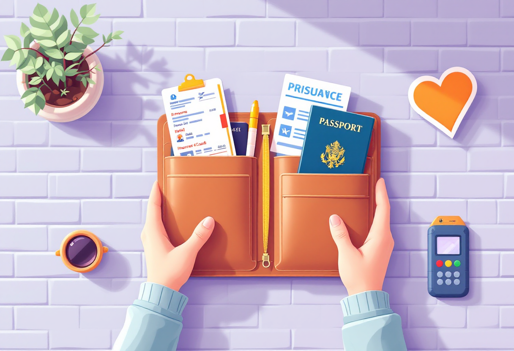
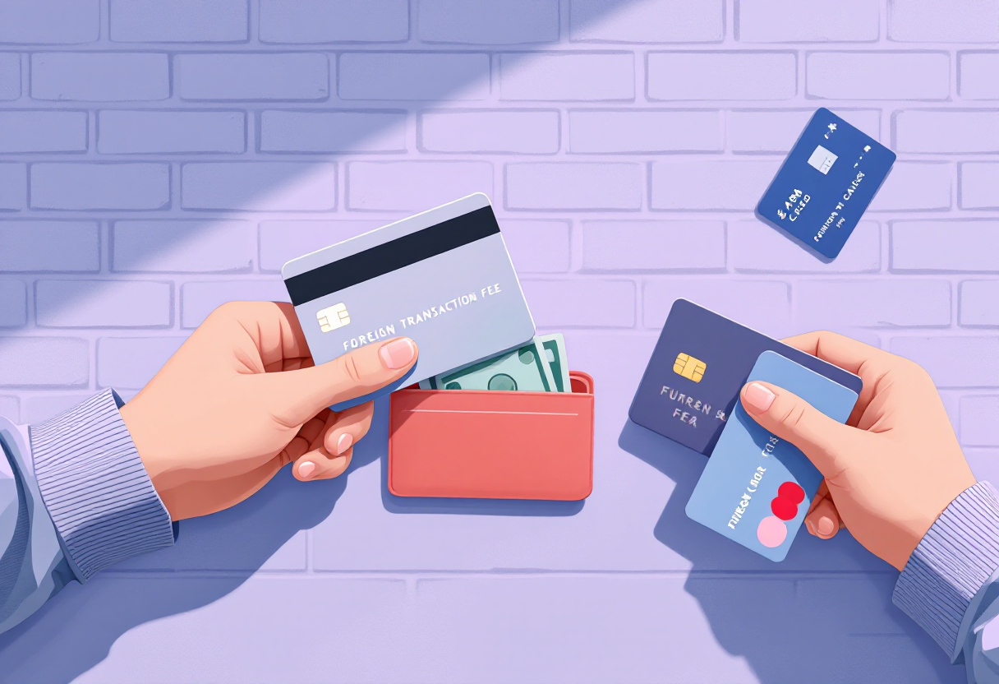
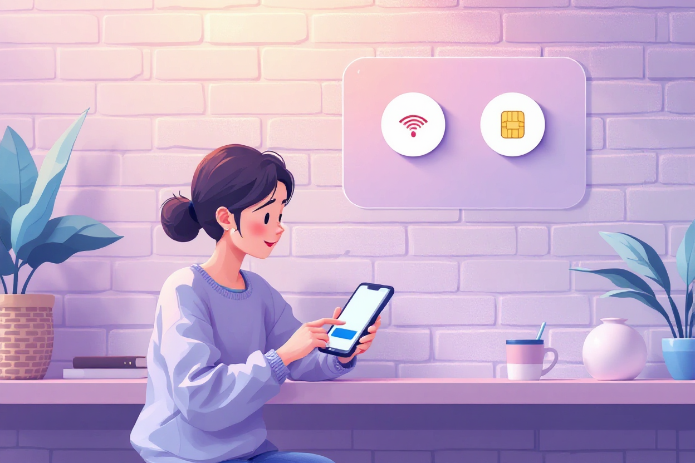
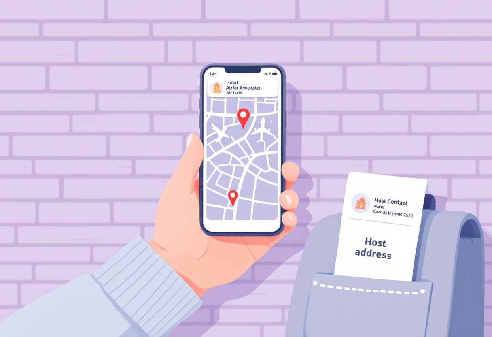

Перед поїздкою за кордон
Кілька речей, які варто перевірити за день до виїзду. Цей чеклист допоможе уникнути більшості типових проблем у дорозі.

Документи
Переконайся, що все необхідне під рукою.
Перевір:
- закордонний паспорт;
- квитки або посадкові талони;
- страховий поліс;
- бронювання житла;
- документи для в'їзду, якщо вони потрібні.
Дані в квитках мають повністю збігатися з паспортом.

Гроші та оплата
Не покладайся на один спосіб оплати.
Перед поїздкою:
- перевір баланс на картці;
- май невеликий запас готівки;
- візьми запасну картку, якщо є;
- перевір комісії за оплату та зняття готівки за кордоном.

Інтернет і зв'язок
Без інтернету складніше знайти житло, транспорт або зв'язатися з близькими.
Заздалегідь:
- перевір умови роумінгу;
- завантаж офлайн-карти;
- збережи адресу житла;
- розглянь eSIM або місцеву SIM-картку.

Дорога та житло
Плануй не лише переліт, а й маршрут після прибуття.
Збережи:
- адресу проживання;
- маршрут від аеропорту або вокзалу;
- контакти власника житла чи готелю;
- номер бронювання.
Краще мати цю інформацію не лише в телефоні, а й у нотатках або на папері.
Резервні копії
Якщо телефон загубиться або розрядиться, резервні копії можуть дуже допомогти.
Збережи окремо:
- копію паспорта;
- страховку;
- квитки;
- важливі контакти.